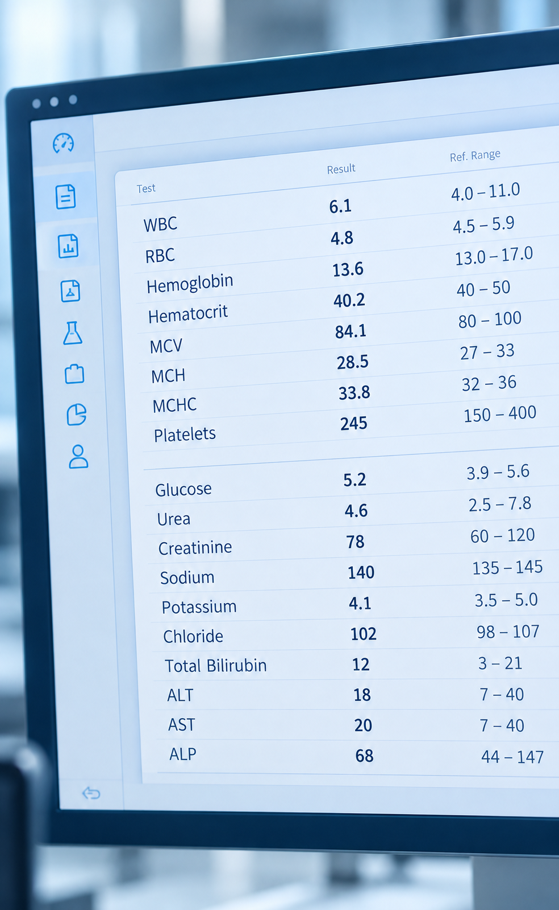
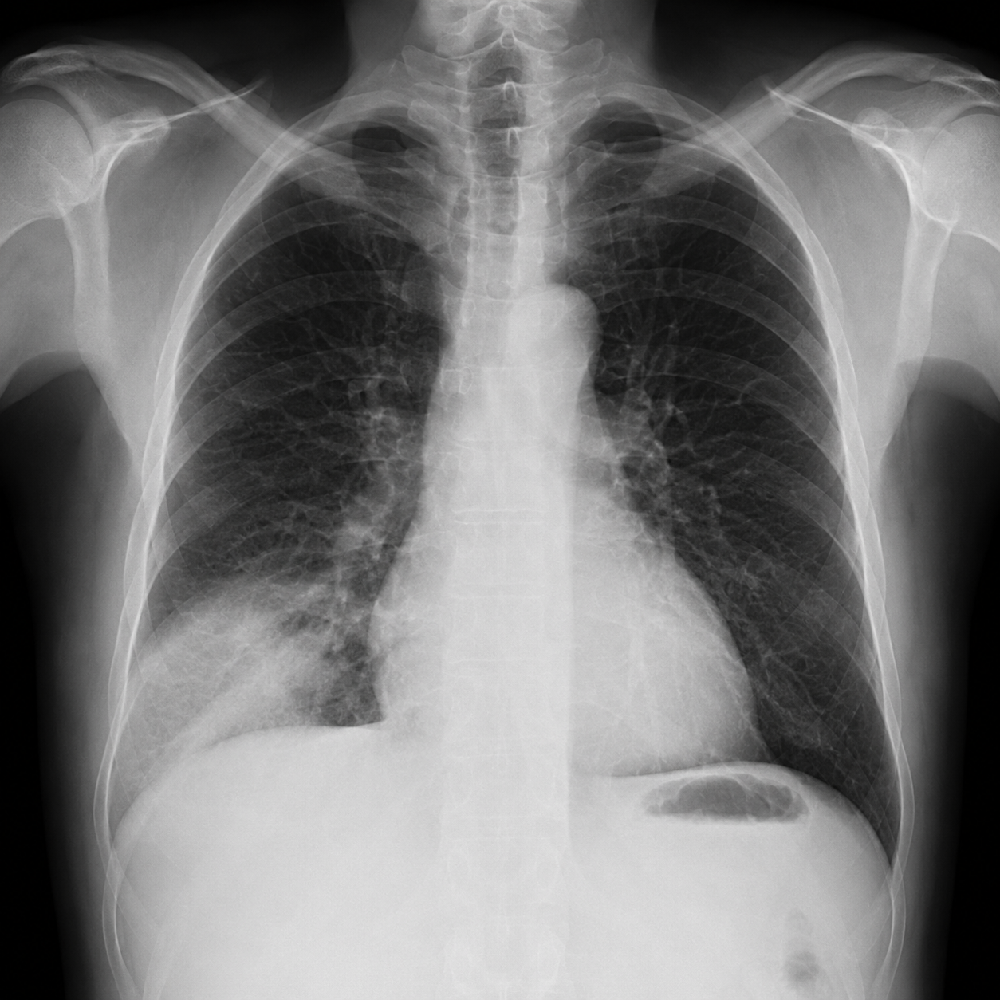
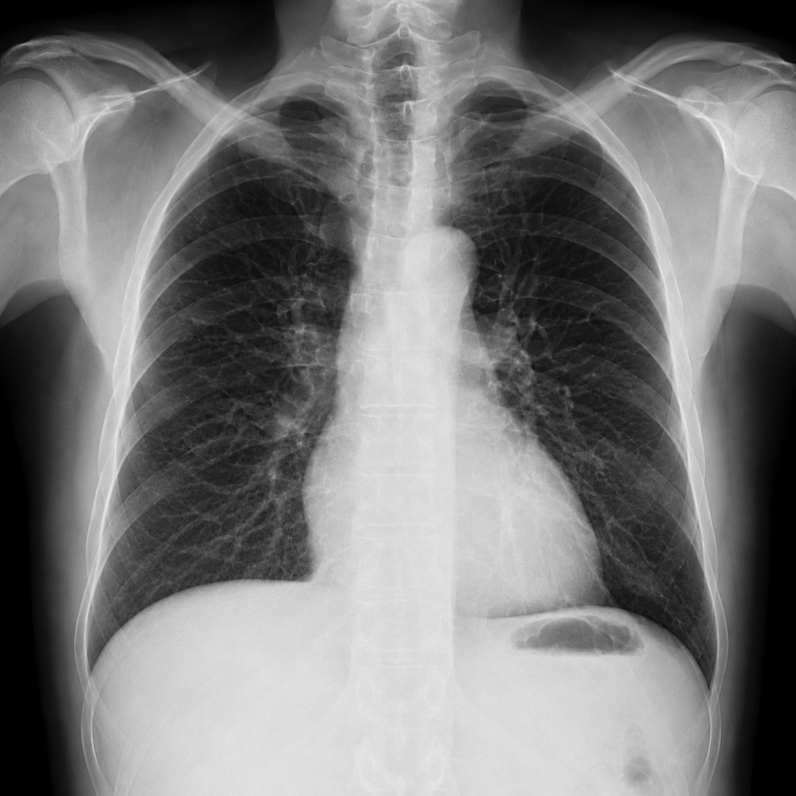
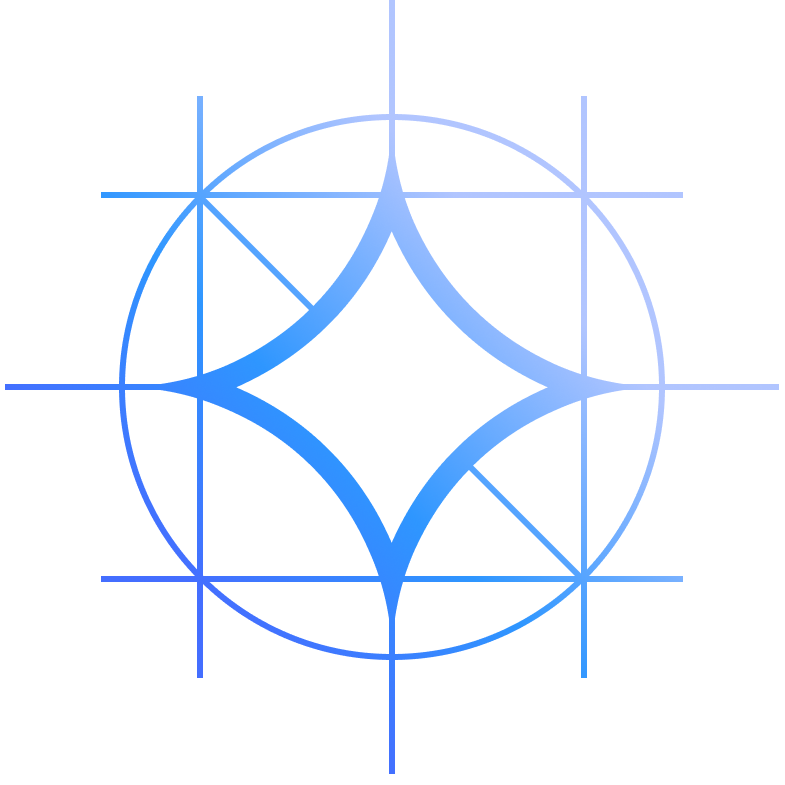

01
Nowhere to point.
The patient has the scan and still cannot understand it. No mark to show what was wrong.
No mark to check.
Any medical artifact goes in. A clinical report comes out, clear enough for someone with no medical knowledge.
TThomas Liem
KKher Wei Le
Each one is a break SihatAI is built to close.
The patient has the scan and still cannot understand it. No mark to show what was wrong.
No mark to check.

02Abnormal values are flagged but the report never tells the full story or the last trend.
A flag, not a story.
There is no historical track record. Each result stands alone, with no past to read.
Nothing to look back on.
Even a slight symptom means a trip to the clinic. There is no advice until they are in the room.
Nothing before the visit.
The MOH guideline is still a search away. The report never brings that source to the case.
No source at all.
Three simple steps. Any medical artifact becomes a clinical report someone with no medical knowledge can understand.
Bring whatever the clinic already has. One record, not five tools.
A multimodal model reads that artifact once and returns one summarized clinical report.
The report is the start. You can keep going on this same case.
The study goes in, a report comes back, and you can ask what it means.
A mark shows what was wrong. The finding, the MOH source, and the signature sit beside it.

Patchy opacity in the right lower zone.
01MOH QR, Management of Tuberculosis, 4th edition
Refer to a specialist. Monitor treatment response and tolerance.
Ask in ordinary words. The answer stays on this study.
Selected: Right lower lobe opacity
Two readings, what the patient said, the lab, the prior study, and a signature.
Patchy opacity in the right lower zone.
There is a hazy patch on the film. Your doctor should review it together with your symptoms.
Three days of fever and cough. Read it with the film.
See a clinician. The account sits on this same record.

PriorAda perubahan di bahagian bawah paru-paru kanan anda.
The app takes the case in. Six steps bring one report back.
Turns the request into a useful task.

Both readings
(the screen)
Takes the case
(the server)

Until the reply
(the job)
Understands and reasons with your data.
Speech into text
(the voice)
Cleaned study in
(the handoff)

Reads this study
(the model)
Findings and the trend
MySQLScans, labs, and slices
Quick citations
Step, model, adapter
safe_uriroutefindingscitationsallowreportsMore scans, a calibrated score, a wider MOH index, and a trained report.
CT, MRI, and histology as one study.
The analysis on it gets sharper.
A closer read of the study.
The confidence matches that read.
Beyond the MOH Quick Reference.
More clinical documents to cite.
Trained on Malaysian clinical language.
The input matches local practice.
The AI model identified a potential abnormality in the lower right lung.
View detailsA change in the lower part of your right lung.
Ask the AIHold until a clinician signs.
View snapshotQuick Reference,
built into the read.